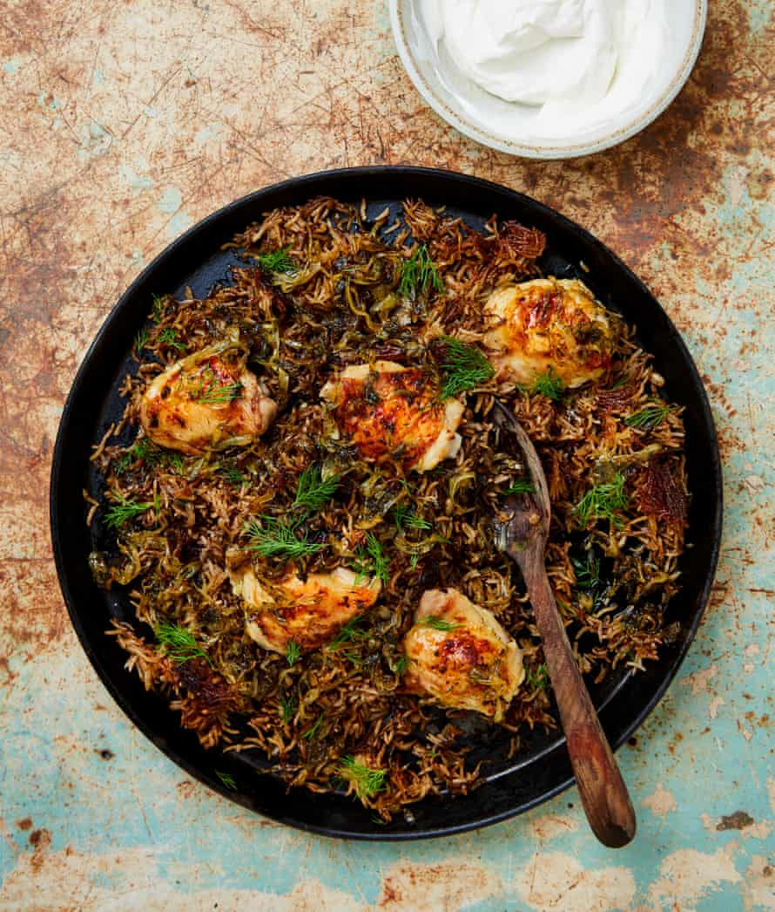

Allspice chicken and rice with dill and yoghurt

One-pot, flavour-packed chicken dishes are my definition of comfort. This one pairs especially well with the cucumber crunch salad below opposite, but any crunchy fresh salad will do.
For the rice
For the chicken
Put the rice in a medium bowl and wash under cold running water until it runs clear. Cover with fresh cold water, leave to soak for an hour, then drain.
Meanwhile, put the chicken in a large bowl with the lemon juice, garlic, half a tablespoon of salt and a good grind of pepper, toss to coat, then leave to marinate at room temperature for 30 minutes to an hour.
Put a large saute pan for which you have a lid on medium-high heat and, once hot, add the butter and olive oil, and melt. Add the onions, chopped dill, garlic, thyme leaves and a quarter-teaspoon of salt, and cook, stirring frequently, for 25 minutes, until the onions have caramelised and turned dark brown.
Transfer about 100g of the onion mixture to a bowl, then add the pine nuts, allspice and cinnamon to the remaining onions in the pan and cook, stirring, for another two minutes.
Stir the drained rice and three-quarters of a teaspoon of salt into the onion pan, then pour in 375ml boiling water. Stir, cover and leave to cook on a low heat for 30 minutes. Take off the heat and leave the rice to steam gently, still covered, for 10 minutes.
While the rice is cooking, heat the oven to 200C (180C fan)/390F/gas 6 and put the chicken and all its marinade on an oven tray lined with greaseproof paper. Roast for 40 minutes, until the skin is crisp and golden brown, and the juices run clear when you poke the tip of a small, sharp knife into the thickest part of the thigh.
Transfer the roast chicken to the top of the rice pot, then pour over any juices from the roasting tray. Serve straight from the pan, topped with the reserved onion mix and dill fronds, with the yoghurt in a bowl on the side.